00:00:00
大家好，今天我們講萬曆。提到萬曆，很多人心目中的一個形象應該就是他將近30年不上朝。今天我們就來聊聊萬曆不上朝這個事。
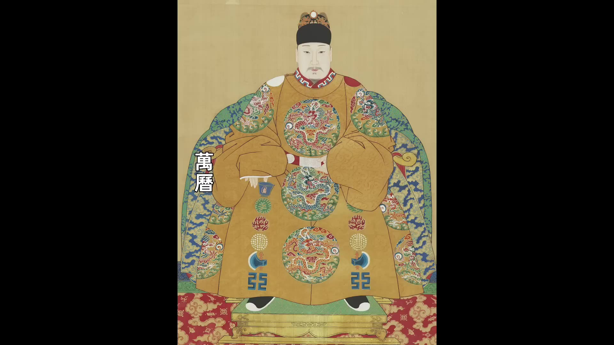
從萬曆十四年開始，萬曆皇帝頻繁下諭旨免朝。萬曆最開始免朝的時候，他都會說自己免朝的原因，他一般都會說自己是因為身體不適，有時候他說自己頭暈，有時候他說自己足心疼，有時候他說自己走路困難。大臣們當然都不滿意，至於皇帝說的那些理由，大臣們也都不認賬，大臣們都認為這是皇帝在給自己找藉口。有人就說呀，他們有人就說說皇帝不上朝是因為沈迷於酒色，有人說皇帝不上朝是在逃避責任。為了恢復讓皇帝上朝，大臣們也是想盡了辦法，最開始他們好幾次都是集體抗議，他們在文華門外長跪給皇帝施加壓力，然後還有人直接給皇帝上奏疏，實際上就是在批評皇帝。當時有一個叫盧洪春的禮部主事他給皇帝上疏批評皇帝，他指責皇帝所說的頭暈是酒色過度導致的，他讓皇帝不可以縱慾過度。還有一個叫雒於仁的大理寺官員他給皇帝上奏疏，他這個奏疏更是一點不客氣，他幾乎全篇都是在罵皇帝，他說皇帝的病因是酒色財氣四毒俱全，說這些病不是藥石能治的。這些官員的指責十分刻薄，給他們廷杖或者給他們革職處分，但是大臣們不滿的聲音絡繹不絕。我們能看出來這些官員一致認為萬曆是在裝病，對他不上朝都很不滿意。但是在330年後事情的反轉來了。
1957年 中國考古學家把萬曆的定陵給打開了定陵被打開
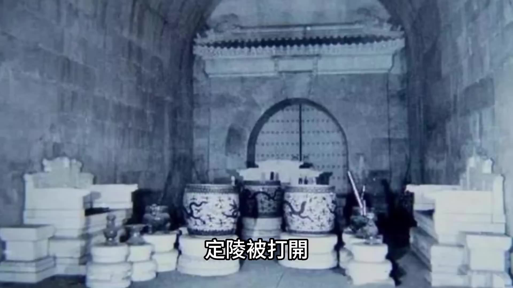
除了出士了很多珍貴的文物之外，還發現了一個很重要的事情，就是萬曆的腿確實患有嚴重的疾病，他的右腿明顯比左腿要短，而且不光腿有問題，他的脊柱也存在明顯的生理性彎曲。醫學證實萬曆這樣的生理疾病確實會讓他行動因難，走路疼痛，而且他背部彎曲就是嚴重的駝背，這種形象也確實不太適合出現在朝臣面前。這也就印證了萬曆他說自己患病是真的，他走路疼痛也是真的。萬曆一下子就變成了讓人同情的角色，那些逼迫他的大臣，那些上奏疏說他酒色過度的大臣好像都變成了壞人。但是要是說萬曆不上朝是因為身體生病，好像又有點太過於簡單了，因為萬曆不只是不上朝，他不幹的事還很多。後來有人對萬曆不幹的事有一個總結叫「六不做」，是不郊、不廟、不朝「六不做」不見、不批、不講，不郊是不祭天、不祭地，不廟是不祭祖，不朝是不視朝，不見是不見大臣，不批是不批示奏疏，不講是停止經筵和日講。萬曆他要是只是因為身體生病，他可以不郊可以不廟，但是他總不能不批示奏疏吧，不能不理朝政吧。所以萬曆不上朝、不理政肯定還有更深層次的原因。為了說明這個原因，我們先介紹一下明代早朝的演變過程，看看早朝到底都幹什麼。
最開始是在朱元璋時期
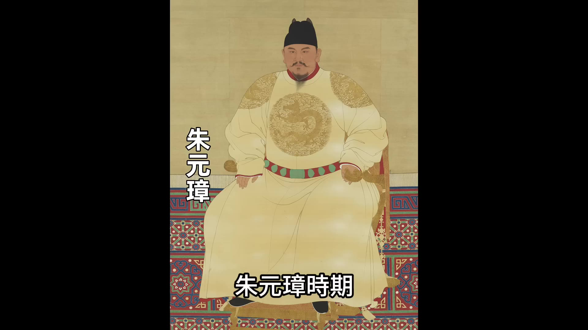
朱元璋時期各個部門有185件事項必須面奏皇帝，面奏皇帝由皇帝做決策，所以這時候皇帝很忙，早朝也很重要。這個規定到正統皇帝登基的時候發生了變化。
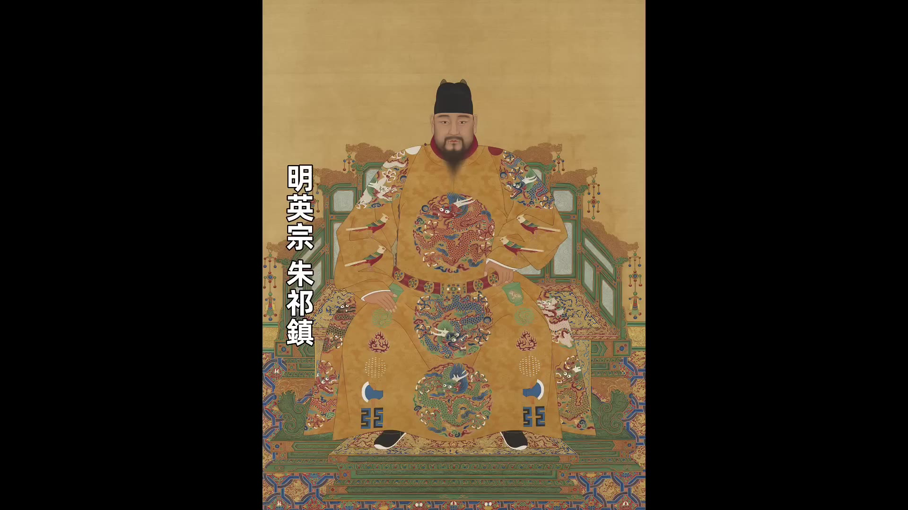
正統皇帝朱祁鎮登基的時候只有9歲，所以朝中就做了個改變，變成只有8種事件需要呈報給皇帝決定，而且要呈報的事項必須在前一天以書面的形式送達御前。到正統時期其實明朝的內閣票擬制度就已經成型了，在正統父親宣宗時期朝廷中樞的工作流程就形成了票擬制度。票擬制度第一步是全國各地的奏章先送進內閣由內閣大學士先看，然後第二步內閣看完奏章之後做出批復意見，他們把奏章和批復意見一起呈送給皇帝，然後第三步皇帝或者司禮監的秉筆太監按照內閣的意見批紅。有了票擬制度之後早朝的實際作用其實就消失了，因為不需要在早朝上做什麼決策了，真正的決策都是提前用票擬制度就做好了。所以有票擬制度之後早朝就變成了一種儀式，只具有象徵性的意義，比如說在早朝上宣讀一些重大的決策或者宣佈一些人事任命，其實沒有這些宣讀和宣佈朝廷的官僚系統也能正常運轉。雖然早朝沒有實際作用，但是這種儀式感也很重要，因為古代是「以禮治國」，像是祭天、祭祖、上朝這都是維護禮制很重要的一部分，所以早朝一直就沒斷。
00:05:00
上早朝其實是一件很辛苦的事情。
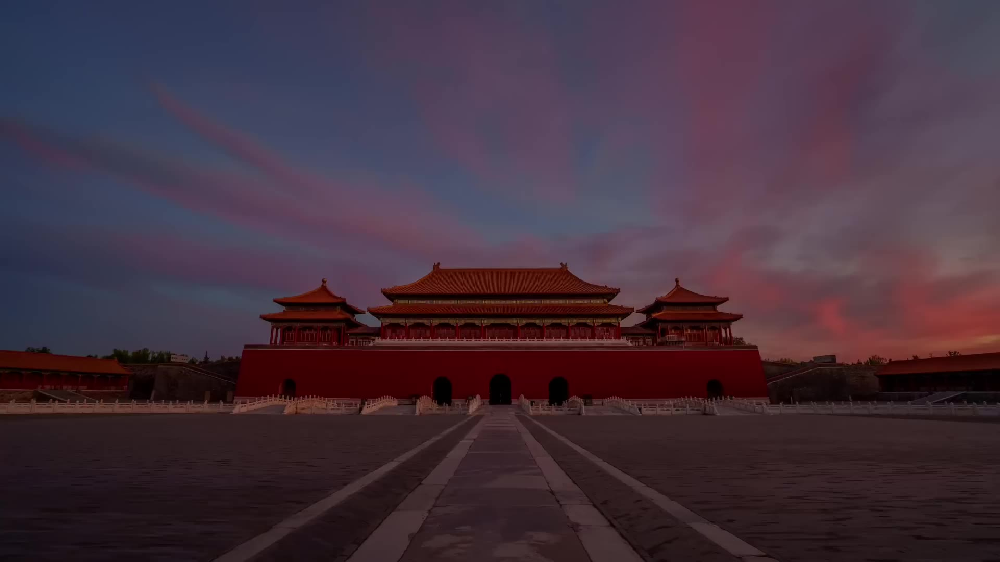
因為早朝是在凌晨5點鐘開始，大臣們就得凌晨4點就都得在紫禁城外面排隊等著，等到紫禁城開門然後進入到奉天門前面的廣場等待早朝。大臣凌晨4點在紫禁城外面等著，意味著大臣凌晨3點到3點半就得出門，這樣他們實際上凌晨2點多就得起床洗漱、穿戴好朝服。每天都凌晨2點鐘起床，這要是一天兩天還行，長年累月這麼堅持一天都不閒斷，其實是一件挺折磨人的事。
「御門聽政」還有明代的早朝叫
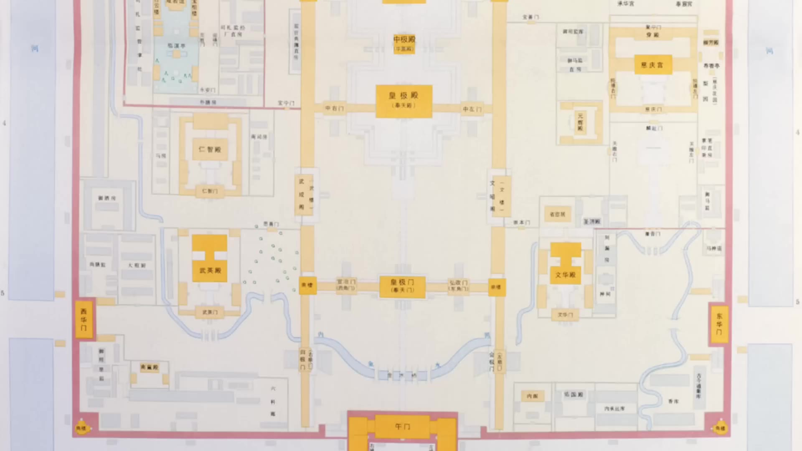
指的是奉天門，後來叫皇極門，皇帝和大臣都是在奉天門廣場進行早朝。皇帝的座位上面可能還有個遮風擋雨的地方，大臣們可沒有，無論是下雨還是下雪，大臣們也只能在室外早朝。下雨天最多他們可以披個雨衣。這樣的早朝不僅官員們很辛苦，皇帝也很辛苦，也是要一天都不能停，只有非常非常特殊的情況早朝才會偶爾的停一次。比如說弘治皇帝時期有一天皇宮裡面失火，弘治皇帝一宿都沒睡覺，他不想上朝，他幾乎是用央求的語氣要求大學士免朝一日，才同意輟朝一日。
所以早朝的功用雖然不大，只是一個儀式，卻還是日復一日的在折磨著皇帝和大臣。首先打破早朝這個傳統的是正德皇帝，正德皇帝朱厚照他個性極強，他要打破朝臣對他的一切道德約束，所以他經常故意戲耍大臣，他不上朝一般都還不提前通知，這樣所有的大臣都得在奉天門廣場苦等等到最後皇帝可能根本就不來，皇帝就派個太監來通知一下說今日免朝。後來正德皇帝住進豹房之後更是很少上朝。但是有一點，正德皇帝雖然他經常不上朝，但是所有的朝臣每天都還得準時上朝。要說這種皇帝不來大臣也得等的行為，實際上是文官集團和皇帝之間的一場博弈。對於大臣來說，他們通過這種天天到崗的行為來給皇帝施加心理壓力，也能凸顯出來皇帝行為的荒唐。他們把皇帝荒唐的行為凸顯出來之後，言官也好有理由寫奏疏來痛罵皇帝荒廢朝政。
到後面就是嘉靖年間。
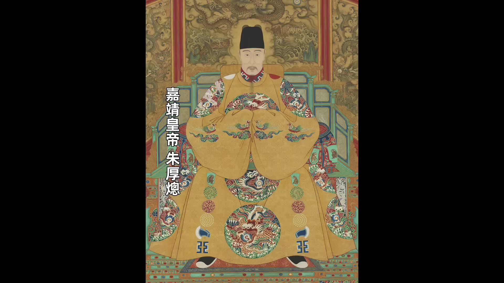
嘉靖前二十年他很盡職盡責，早朝都是維持的很好，但是到後二十年他住到西苑之後也開始不上朝。到萬曆即位之後關於早朝的安排又有一些變化，因為早朝到這時候就只是個儀式，張居正就把早朝給簡化了，張居正規定的是每十天之內其他日子免朝，這樣一個月只需要上朝九天，皇帝和大臣就都變輕鬆了。這樣的狀態一直維持到後來的萬曆不上朝。整體這些情況就是明代從最開始到萬曆不上朝中間的所有的經歷的變化。不過萬曆不上朝跟正德不上朝跟嘉靖不上朝有一個很大的區別，就是萬曆不上朝大臣們也不上朝了。可以這麼說，正德不上朝的時候大臣們都還上朝一邊在等，嘉靖不上朝的時候大臣們上朝是在等皇帝的一些重要的事項的決策，因為嘉靖不上朝是不上朝但是他不是不管政務，相反他對權力抓的很緊，重大的事項他都有批示，大臣們在早朝雖然等不來皇帝但是他們總能等到太監來宣達皇帝的批示，尤其是跟自己有關的批示。但是到萬曆就不一樣了，萬曆不上朝他對於一般的政務他也不做批示，所以大臣們即使上朝既等不來皇帝索性就都不上朝了。到萬曆四十年以後這種現象更誇張，是廷裡面都快沒人了，因為萬曆採取消極怠工的方式跟朝臣對抗，他最直接的表現就是拒絕任免官員。比如說沈一貫當內閣首輔期間，內閣成員因為去世或者因為離職，內闊裡面就剩他一個人了。
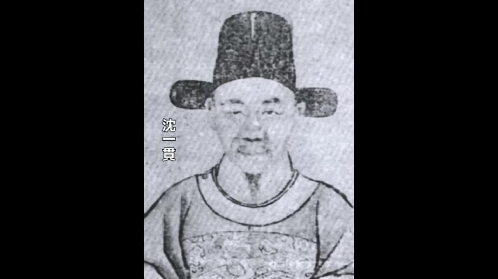
沈一貫給萬曆上奏疏說內閣要增補成員，他上了好多次奏疏，但是萬曆就是不理。萬曆不理結果就是內閣五年內沒有補一個人，導致只有沈一貫一個人處理全國的政務，累的沈一貫因為過度操勞臥病在床。沈一貫臥病在床內閣裡面沒人辦公，居然出現了內閣關門掛上大鎖的奇觀，都到這種程度了，萬曆還是不理朝政。內閣都是這樣，下面各部的情況就更是嚴重，官員們該晉級的得不到晉級，該罷免的也不罷免，所有的官員任免的申請萬曆一概都是留中不發，或者生了重病的他們上疏跟萬曆請辭，萬曆也是留中不發不予理會。有的大臣在遞交了好幾次辭職申請之後得不到答復，一氣之下他乾脆自己就走了，自己走了萬曆也不管，這樣朝廷的職位就變成了「只出不進」在崗的大臣。
00:10:00
每當有一個人去世了或者有人實在幹不下去走了就空出來一個位置這個位置就再也補不上了這就導致萬暦後期現了「三空」的局面監空「三空」是部空、寺空、「部」是指六部六部裡面不要說一般的職位有的部甚至連尚書連待郎這樣的職位都存在空缺『寺」是指大理寺、太常寺光祿寺這些特定的職能機構這些寺也出現大面積的缺員的現象「監」是指國子監、欽天監萬曆這麽做對明朝的官僚體系造成了毀滅性的打擊他這麼做等於是在自己毀自己的江山那他到底為什麼要這麼做他這麼做呀有一個深層次的原因還有一個引發他這種行為的衝突點在這個衝突點爆發之後萬曆就開始消極怠工報復官僚我們先說這個衝突點再說深層的原因這個衝突點就是「爭國本事件』
說「『爭國本」要從萬曆的女人開始說萬曆他是在15歲的時候大婚
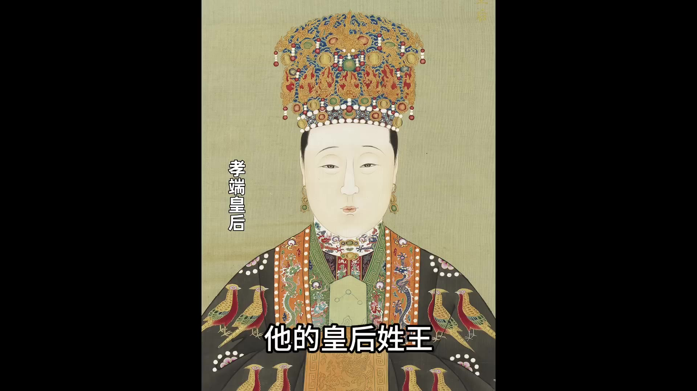
他的皇后姓王我們可以管他叫王皇后王皇后是萬曆的母親李太后給他挑選的萬曆大婚之後他對王皇后肯定說不上喜歡因為史書裡面記載的是萬曆在大婚之後不久對王皇后就表現冷淡而且這種冷淡持續了一有的書裡面甚至說王皇后因為得不到萬曆的情感關愛經常拿宮女來發洩怨氣王皇后一生也沒給萬曆生下兒子她只生了一個女兒這也為後面的爭國本埋下了伏筆至皇后要是能生個兒子她的兒子就是嫡子嫡子冊立為太子這是毫無爭議的事但是王皇后沒生兒子事件就有了後面的「爭國本」皇帝大婚有一個很重要的意義就是皇帝可以合法的冊立其她妃嬪了萬曆在大婚之後僅一個月他就冊立了兩個妃子一個是昭妃但是這兩個妃子萬曆也不喜歡這兩個妃子也沒給萬曆生下皇子萬曆的第一個皇子是一個宮女給他生的是萬曆有一次在他母親慈寧宮的時候他臨時起興寵幸了一個姓王的宮女這個宮女就懷孕了宮女懷孕之後萬曆的母親李太后發現了李太后發現了就問萬曆怎麼回事萬曆一開始還有點羞恥不想承認
起居注裡面明確的記錄著萬曆在哪天寵幸了這個宮女萬曆想不認都不行李太后確認了這確實是萬曆幹的事之後反而很高興因為畢竟能抱上孫子了在李太后的支持之下這個姓王的宮女很順利的就把孩子給生下來了這個孩子就是萬曆的長子朱常洛母憑子貴孩子生下來之後姓王的宮女也被冊封封為恭妃但是萬曆對這個恭妃一直都不喜歡甚至後來都感到厭惡在恭妃之後萬曆十年萬曆按照嘉靖朝的慣例又冊封了九嬪新冊封的九嬪裡面出現了一個萬曆真正喜歡的女人而且是他喜歡一生的女人這個女人姓鄭我們一般管她叫鄭氏當時她的封號是淑嬪得到萬曆的寵愛之後鄭氏這個淑嬪很快就晉升為了德妃然後又升為了皇貴妃她就是這次爭國本事件的女主角鄭貴妃這個鄭貴妃不僅得到了萬曆的獨寵他還給萬曆生了一個兒子就是皇三子朱常洵萬曆非常喜歡朱常洵可能是愛屋及烏他喜歡鄭貴妃他也喜歡鄭貴妃的兒子朱常洵他不喜歡恭妃也就不喜歡恭妃的兒子朱常洛反正朱常洵出生之後萬曆就想冊封朱常洵為太子這就引發了朝臣的強烈反對因為按照明朝的祖訓對於立太子有明確的規定規定就是「有嫡立嫡，無嫡立長」所以朝臣們絕對不能讓萬曆廢長立幼萬曆自己也知道祖訓很難違背他想立皇三子為太子難度肯定很大他就不斷的進行試探和跟大臣們周旋
萬曆和大臣的第一波較量是他把他寵愛的鄭氏升為皇貴妃因為母憑子貴子也得憑母貴他把鄭氏升格為皇貴妃就比皇長子的母親恭妃高出一級萬曆就是想通過提高鄭氏的地位為將來立皇三子為太子做鋪墊萬曆提出來之後大臣們一下就能看出來萬曆的用意大臣們紛紛上疏反對大臣們的觀點是說這是倫理不順的行為說是恭妃先生的皇長子德妃後生的皇三子也應該先冊封恭妃再冊封德妃
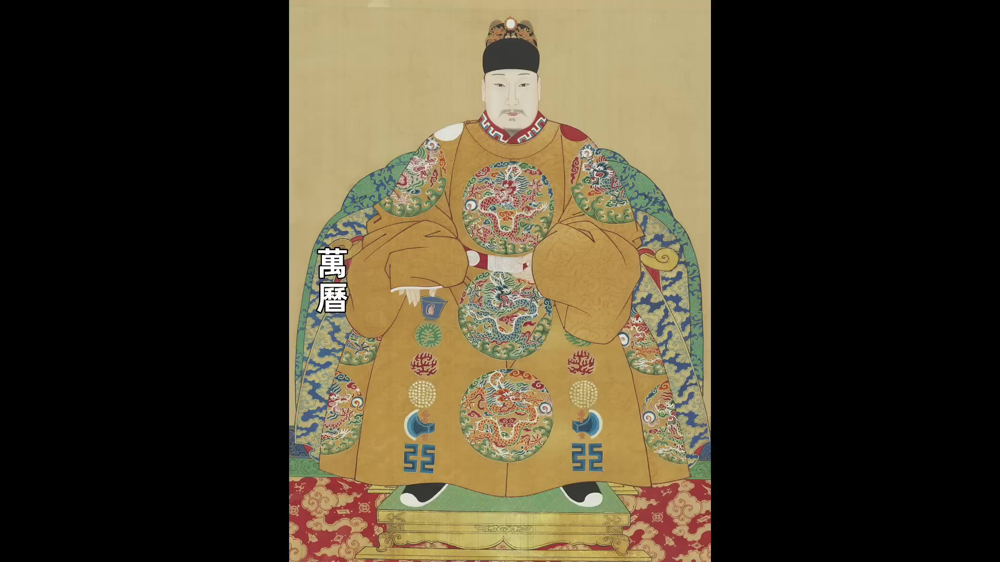
大臣們的反應這麼大呀萬曆就很生氣萬曆認為他喜歡哪個女人他想封哪個女人是他自己的私事大臣們無權干涉他就堅持己見不顧大臣反對下旨冊封鄭氏為皇貴妃大臣們雖然不滿意但是也沒辦法這個事就依了萬曆了這裡面就多說一句多說一點其實萬曆是真的很喜歡鄭貴妃即使沒有立儲的事萬曆應該也會把鄭氏晉升為鄭貴妃而對於恭妃
00:15:00
萬曆對恭妃的態度可見一斑。他不僅不喜歡恭妃，甚至將其長期幽禁於冷宮。即使恭妃之子朱常洛被立為太子，恭妃的處境始終未見改善，最終雙目失明而歿，死狀淒苦。表面上看，這似乎印證了鄭貴妃受寵而恭妃失勢的態勢。然而事實並非如此簡單。
萬曆去世後的定陵陪葬情況揭開了這段歷史的另一面。陵內三副棺槨分別屬於萬曆、孝端皇后與孝敬皇后。其中孝端皇后為萬曆大婚時迎娶的王皇后，與萬曆合葬無疑。而孝敬皇后實為萬曆最不喜的恭妃。這背後的緣由需從孝端皇后去世後的變局說起。萬曆四十八年四月，孝端皇后病逝，三個月後萬曆亦駕崩。臨終前萬曆曾遺命要求將最寵愛的鄭貴妃冊立為皇后，與其合葬定陵。但此遺願最終未能實現——萬曆之子朱常洛在位僅月餘即駕崩，其孫天啓帝即位後遭大臣反對，認為鄭貴妃是導致「爭國本」事件的禍首。最終天啓帝未執行遺命，反而追尊其祖母王氏為孝敬皇后，使其與萬曆合葬。
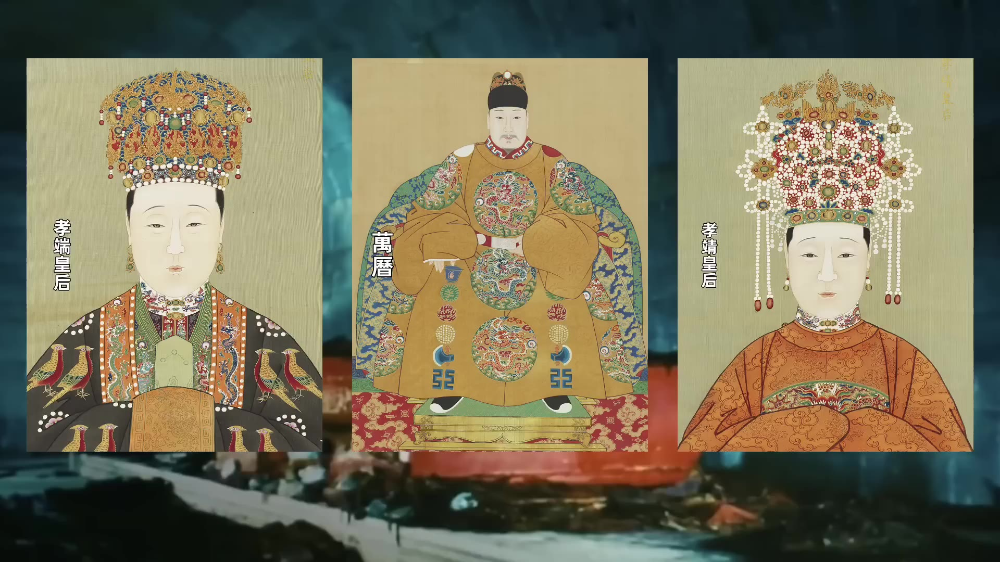
如此看來，萬曆一生始終受制於他人。生前受大臣掣肘，去世後仍被大臣左右，終其一生願望皆未能實現。回顧「爭國本」事件，萬曆與大臣的較量可分為幾個階段：首回合萬曆封鄭氏為皇貴妃成功，第二回合大臣發現萬曆欲立皇三子朱常洵為太子，遂群起反對立長子為太子。萬曆以「拖」應對，先是稱朱常洛年幼體弱，後又提出需待王皇后生嫡子後再立太子，並提出「三王並封」之議。此議遭群臣激烈抨擊，迫使其收回成命。最終在萬曆生母李太后強力干預下，萬曆被迫妥協，於萬曆二十九年正式冊立朱常洛為太子，封朱常洵為福王，「爭國本」事件至此告一段落。
此事件雖使文官集團獲勝，卻也導致萬曆對文官集團的報復。他開始實行二十余年不上朝、不批奏疏、不任免官員的消極罷工。實質上，這場罷工的根源並非單一事件，而是萬曆與文官集團長期的矛盾。自九歲登基起，萬曆便受制於張居正輔政。張居正對其管教極嚴，甚至限制其舉辦元宵燈會。李太后亦嚴厲管教萬曆，與張居正配合制約。萬曆十五歲大婚後，此種制約關係仍在持續。
00:20:00
他就應該自己親政了，但是有張居正存在，朝廷所有的決策都要張居正說了算。等到張居正去世，萬曆親政的時候，他發現朝廷還是籠罩在張居正的陰影之下，朝中的大臣都是張居正生前安排的人，所以萬曆還是不能親政。
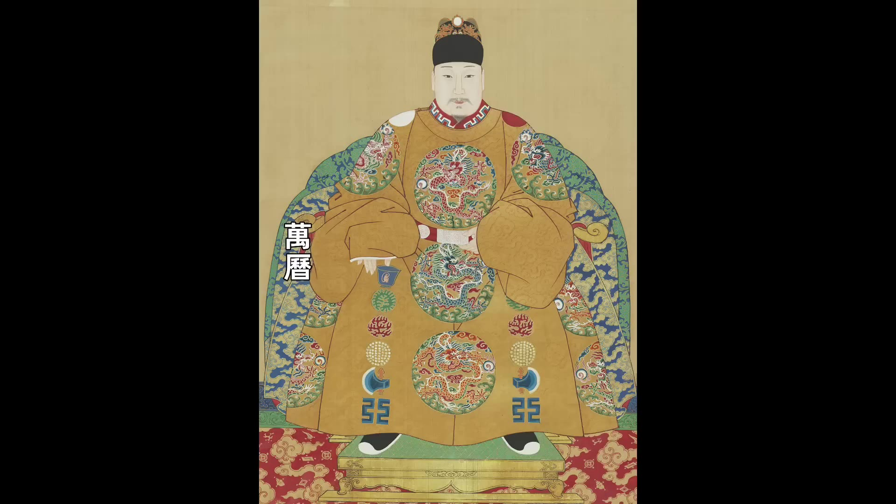
萬曆就開始清算張居正，他要罷免所有張居正的人。在清算完張居正之後，萬曆認為他總算可以自己說的算了吧，但是他發現那些幫著他一起清算張居正的文官大臣，他們又把矛頭指向他。他想幹什麼、他不想幹什麼，他自己還是做不了主，一旦他做出一點不合禮制的事，立刻就會有文官跳出來勸諫。要是不聽勸諫，文官集團就會輪番上陣，甚至以辭官或者以死相威脅。他們甚至會在奏疏裡面直接罵皇帝，他們根本就不怕觸怒皇帝。萬曆要是因此懲罰他們，把他們廷杖、下獄或者流放，他們還會引以為榮，得到一個「以死勸諫」的美名。這點就讓萬曆感到無比的窒息和絕望。萬曆後來在諭旨裡面大罵：
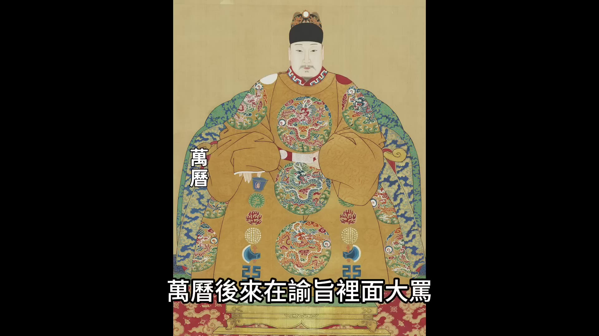
這些文官是「訐君賣直」之徒。「訐君」是指公開的嘲諷皇帝，「賣直」是指博得正直的美名。「訐君賣直」就是通過罵皇帝博得大臣自己的美名。所以在萬曆看來，這些上疏勸諫的大臣都是在訐君賣直。所以萬曆不能讓他們得逞，萬曆要怎麼做？他想出來的方法就是不理他們，留中不發。不管你們上疏是勸諫也好、是罵我也好，我一概留中不發，不給你們回復。因為一旦回復，回復同意也不行，懲罰也不行，懲罰他們反而讓他們得了個美名。所以萬曆找到的最有效的辦法就是留中不發。在爭國本事件之後，萬曆就開始報復文官集團，他不僅對大臣勸諫的奏疏留中不發，對於官員的任免也留中不發。你們不是處處制約我嗎？我也報復你們，你們應該提拔的、應該免職的，我一概不予回復。這就造成了朝廷中各個崗位嚴重缺額的情況。
萬曆不做的還不只是官員的任免，那些常規的應該皇帝主持的儀式他也不做了，比如說什麼祭天、祭地，他都不做了。其實明朝發展到中後期，在文官集團眼裡，什麼樣的皇帝算好皇帝？有一句話說的叫「聖君垂拱而治，賢臣輔弼天下」。這句話通俗一點說，就是皇帝你只要負責禮儀方面，你像個擺設一樣，該祭天的時候祭天，親自主持國家的各種重大禮儀，具體的朝政你是管的越少越好，文官集團來管理。皇帝批紅的時候，最好是全部按照內閣的票擬來批復。這樣的皇帝在文官看來就是明君，就是聖主。比如說明憲宗朱見深就是這麼個皇帝，明憲宗死了之後，大臣們給他的評價是「垂衣拱手，不動聲色，而天下大治」，這是很高的評價。這就是文官集團眼裡的好皇帝。皇帝但凡有點自己的個性、有點自己的想法，在大臣看來都是離經叛道之舉，都是應該勸諫的。
後來明朝的皇帝被看管到什麼程度？不說國家大事，就說皇帝自己的私生活，大臣都在干預。皇帝要晉升哪個妃子，大臣要管；皇帝要賞賜哪個皇子，大臣要管；就連皇帝去哪個妃子那過夜過多了，大臣們都要勸諫一下，說皇帝你應該雨露均沾。明朝後期的皇帝被看管的就更緊，但是皇帝也是人，也是正常的人，不是木偶。他被看管的這麼緊，想掙扎一下都是很正常的現象，只不過每個人掙扎的方式、每個人突破的方式不一。
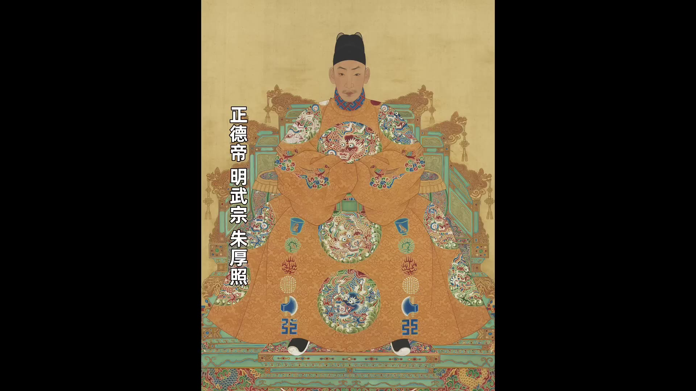
正德皇帝用的方法是戲耍大臣，他自己住進豹房，他隨性生活、隨心所欲。嘉靖皇帝用的方法是控制大臣，嘉靖的馭人之術非常厲害，他通過挑撥讓大臣之間不團結，讓大臣內鬥，大臣們自己來鬥去，然後嘉靖居中做裁判，他就可以穩穩的操控政權。嘉靖雖然後三十年也不上朝，但是他從來沒有放棄過理政，所有的重大決策都是他自己在做的。萬曆用的方法就是長期罷工，他不批奏折、不任免官員，甚至連國家出現重大災情，旱災、澇災這些萬曆通通都不管。他這種做法對國家的傷害其實是很大的，他讓明朝整體的官僚機器的運轉都陷入到了半癱瘓的狀態。但是我們也需要說，萬曆他也不是什麼都不管，碰到重大的涉及國家安全的方面，他還是會管的。比如說朝鮮戰爭，日本侵略朝鮮，明朝要不要救援，朝廷上面大臣的意見不一樣，吵來吵去，萬曆就乾綱獨斷，下發出兵的諭旨。還有對於那些他認為對他很忠誠的重臣，他也會保護，比如說兵部尚書石星、比如說他很欣賞的將領李如梅，他都會動用手段去保護和提拔，甚至都不惜跟群臣對抗。所以萬曆的消極怠工不是他無能，而是他把消極作為一種跟文官集團對抗的武器。
00:25:02
甚至是他報復文官集團的一種方法，但是他這種方法是一種雙輸的做法，他報復了文官集團，也隨著一起沈淪了。
最後我們要說一個問題，就是萬曆作為皇帝、作為九五之尊，他為什麼就得受文官集團的制約？他為什麼就不能強硬一就按照自己的意志去辦事？朱元璋在開國的時候，他廢宰相，他想做到的不就是皇帝極權嗎？明朝的皇帝按理來說應該是權力最大的皇帝，朱元璋做到了皇帝極權，但是為什麼到萬曆這卻處處都受到制約呢？出現這種現象的根源還是在朱元璋身上。朱元璋確實是做到了皇帝極權，他自己極權了，他定了兩個規矩：一個是在意識形態上面，明朝要用儒家思想來治國。
就是我們常說的祖制《皇明祖訓》，朱元璋在《皇明祖訓》裡面確立了一系列的準則，他的目的是為了確保朱家的子孫可以永保帝業。比如說萬曆的這次爭國本事件「有嫡立嫡，無嫡立長」這條規則就是明確的寫在祖訓裡面的，這是大臣們用來反駁萬曆最強有力的武器。祖訓在明朝有至高無上的地位，誰都不能撼動，別說是萬曆，明成祖朱棣碰到這個問題的時候他都妥協了。
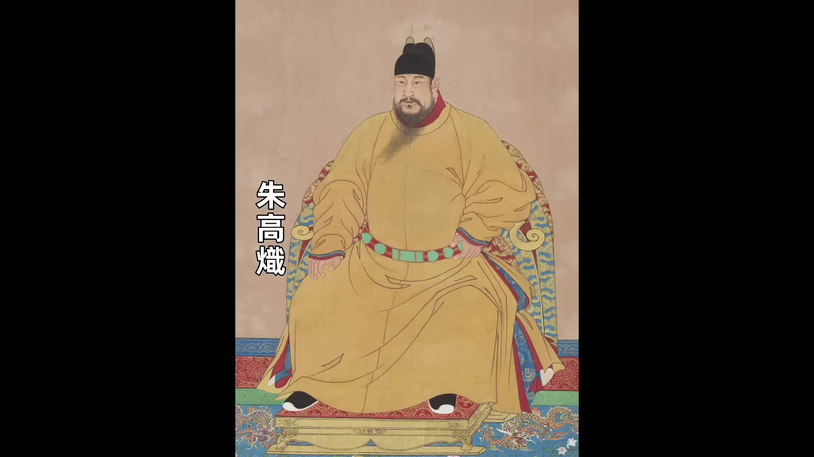
所以作為朱元璋的子孫，他們要受兩方面的制約，一個是儒家禮法，一個是祖訓，這個就是囚禁他們的兩個枷鎖。他們在這兩個枷鎖的制約之下完全不能有自己的個人意志，他們做出來的各種看起來很荒唐很不可思議的行為，其實都是為了衝破這兩個枷鎖。這也是萬曆不上朝不理政的真正原因。好了，今天的內容就講到這裡了。我開通了「1921-1945年的專題歷史課程」，有興趣的朋友歡迎點擊影片下方鏈接瞭解，歡迎大家點贊關注。
00:00:00
大家好今天我們講萬曆提到萬曆很多人心目中的一個形象應該就是他將近30年不上朝今天我們就來聊聊萬曆不上朝這個事
從萬曆十四年開始萬曆皇帝頻繁下諭旨免朝
萬曆最開始免朝的時候他都會說自己免朝的原因他一般都會說自己是因為身體不適有時候他說自己頭暈有時候他說自己足心疼有時候他說自己走路困難大臣們當然都不滿意至於皇帝說的那些理由大臣們也都不認賬大臣們都認為這是皇帝在給自己找藉口有人就說呀他們有人就說說皇帝不上朝是因為沈迷於酒色有人說皇帝不上朝是在逃避責任為了恢復讓皇帝上朝大臣們也是想盡了辦法最開始他們好幾次都是集體抗議他們在文華門外長跪給皇帝施加壓力然後還有人直接給皇帝上奏疏實際上就是在批評皇帝當時有一個叫盧洪春的禮部主事他給皇帝上疏批評皇帝他指責皇帝所說的頭暈是酒色過度導致的他讓皇帝不可以縱慾過度還有一個叫雒於仁的大理寺官員他給皇帝上奏疏他這個奏疏更是一點不客氣他幾乎全篇都是在罵皇帝他說皇帝的病因是酒色財氣四毒俱全說這些病不是藥石能治的這些官員的指責十分刻薄給他們廷杖或者給他們革職處分但是大臣們不滿的聲音絡繹不絕我們能看出來這些官員一致認為萬曆是在裝病對他不上朝都很不滿意但是在330年後事情的反轉來了
1957年 中國考古學家把萬曆的定陵給打開了定陵被打開
除了出士了很多珍貴的文物之外還發現了一個很重要的事情就是萬曆的腿確實患有嚴重的疾病他的右腿明顯比左腿要短而且不光腿有問題他的脊柱也存在明顯的生理性彎曲醫學證實萬曆這樣的生理疾病確實會讓他行動因難走路疼痛而且他背部彎曲就是嚴重的駝背這種形象也確實不太適合出現在朝臣面前這也就印證了萬曆他說自己患病是真的他走路疼痛也是真的萬曆一下子就變成了讓人同情的角色那些逼迫他的大臣那些上奏疏說他酒色過度的大臣好像都變成了壞人但是要是說萬曆不上朝是因為身體生病好像又有點太過於簡單了因為萬曆不只是不上朝他不幹的事還很多後來有人對萬曆不幹的事有一個總結叫「六不做」是不郊、不廟、不朝「六不做」不見、不批、不講不郊是不祭天、不祭地不廟是不祭祖不朝是不視朝不見是不見大臣不批是不批示奏疏不講是停止經筵和日講萬曆他要是只是因為身體生病他可以不郊可以不廟但是他總不能不批示奏疏吧不能不理朝政吧所以萬曆不上朝、不理政肯定還有更深層次的原因為了說明這個原因我們先介紹一下明代早朝的演變過程看看早朝到底都幹什麼
最開始是在朱元璋時期
朱元璋時期各個部門有185件事項必須面奏皇帝面奏皇帝由皇帝做決策所以這時候皇帝很忙早朝也很重要這個規定到正統皇帝登基的時候發生了變化
正統皇帝朱祁鎮登基的時候只有9歲所以朝中就做了個改變變成只有8種事件需要呈報給皇帝決定而且要呈報的事項必須在前一天以書面的形式送達御前到正統時期其實明朝的內閣票擬制度就已經成型了在正統父親宣宗時期朝廷中樞的工作流程就形成了票擬制度票擬制度第一步是全國各地的奏章先送進內閣由內閣大學士先看然後第二步內閣看完奏章之後做出批復意見他們把奏章和批復意見一起呈送給皇帝然後第三步皇帝或者司禮監的秉筆太監按照內閣的意見批紅有了票擬制度之後早朝的實際作用其實就消失了因為不需要在早朝上做什麼決策了真正的決策都是提前用票擬制度就做好了所以有票擬制度之後早朝就變成了一種儀式只具有象徵性的意義比如說在早朝上宣讀一些重大的決策或者宣佈一些人事任命其實沒有這些宣讀和宣佈朝廷的官僚系統也能正常運轉雖然早朝沒有實際作用但是這種儀式感也很重要因為古代是「以禮治國」像是祭天、祭祖、上朝這都是維護禮制很重要的一部分所以早朝一直就沒斷
00:05:00
上早朝其實是一件很辛苦的事情
因為早朝是在凌晨5點鐘開始凌晨5點開始大臣們就得凌晨4點就都得在紫禁城外面排隊等著等到紫禁城開門然後進入到奉天門前面的廣場等待早朝大臣凌晨4點在紫禁城外面等著意味著大臣凌晨3點到3點半就得出門這樣他們實際上凌晨2點多就得起床洗漱、穿戴好朝服每天都凌晨2點鐘起床這要是一天兩天還行長年累月這麼堅持一天都不閒斷其實是一件挺折磨人的事「御門聽政」還有明代的早朝叫
指的是奉天門後來叫皇極門皇帝和大臣都是在奉天門廣場進行早朝皇帝的座位上面可能還有個遮風擋雨的地方大臣們可沒有無論是下雨還是下雪大臣們也只能在室外早朝下雨天最多他們可以披個雨衣這樣的早朝不僅官員們很辛苦皇帝也很辛苦也是要一天都不能停只有非常非常特殊的情況早朝才會偶爾的停一次比如說弘治皇帝時期有一天皇宮裡面失火弘治皇帝一宿都沒睡覺他不想上朝他幾乎是用央求的語氣要求大學士免朝一日才同意輟朝一日所以早朝的功用雖然不大只是一個儀式卻還是日復一日的在折磨著皇帝和大臣首先打破早朝這個傳統的是正德皇帝正德皇帝朱厚照他個性極強他要打破朝臣對他的一切道德約束所以他經常故意戲耍大臣他不上朝一般都還不提前通知這樣所有的大臣都得在奉天門廣場苦等等到最後皇帝可能根本就不來皇帝就派個太監來通知一下說今日免朝後來正德皇帝住進豹房之後更是很少上朝但是有一點正德皇帝雖然他經常不上朝但是所有的朝臣每天都還得準時上朝要說這種皇帝不來大臣也得等的行為實際上是文官集團和皇帝之間的一場博弈對於大臣來說他們通過這種天天到崗的行為來給皇帝施加心理壓力也能凸顯出來皇帝行為的荒唐他們把皇帝荒唐的行為凸顯出來之後言官也好有理由寫奏疏來痛罵皇帝荒廢朝政
到後面就是嘉靖年間
嘉靖前二十年他很盡職盡責早朝都是維持的很好但是到後二十年他住到西苑之後也開始不上朝到萬曆即位之後關於早朝的安排又有一些變化因為早朝到這時候就只是個儀式張居正就把早朝給簡化了張居正規定的是每十天之內其他日子免朝這樣一個月只需要上朝九天皇帝和夫臣就都變輕鬆了這樣的狀態一宜維持到後來的萬曆不上朝整體這些情況就是明代從最開始到萬曆不上朝中間的所有的經歷的變化不過萬曆不上朝跟正德不上朝跟嘉靖不上朝有一個很大的區別就是萬曆不上朝大臣們也不上朝了可以這麼說正德不上朝的時候大臣們都還上朝一邊在等嘉靖不上朝的時候大臣們上朝是在等皇帝的一些重要的事項的決策因為嘉靖不上朝是不上朝但是他不是不管政務相反他對權力抓的很緊重大的事項他都有批示大臣們在早朝雖然等不來皇帝但是他們總能等到太監來宣達皇帝的批示尤其是跟自己有關的批示但是到萬曆就不一樣了萬曆不上朝他對於一般的政務他也不做批示所以大臣們即使上朝既等不來皇帝索性就都不上朝了到萬曆四十年以後這種現象更誇張是廷裡面都快沒人了因為萬曆採取消極怠工的方式跟朝臣對抗他最直接的表現就是拒絕任免官員比如說沈一貫當內閣首輔期間內閣成員因為去世或者因為離職內闊裡面就剩他一個人了
沈一貫給萬曆上奏疏說內閣要增補成員他上了好多次奏疏但是萬曆就是不理萬曆不理結果就是內閣五年內沒有補一個人導致只有沈一貫一個人處理全國的政務累的沈一貫因為過度操勞臥病在床沈一貫臥病在床內閣裡面沒人辦公居然出現了內閣關門掛上大鎖的奇觀都到這種程度了萬曆還是不理朝政內閣都是這樣下面各部的情況就更是嚴重官員們該晉級的得不到晉級該罷免的也不罷免所有的官員任免的申請萬曆一概都是留中不發或者生了重病的他們上疏跟萬曆請辭萬曆也是留中不發不予理會有的大臣在遞交了好幾次辭職申請之後得不到答復一氣之下他乾脆自己就走了自己走了萬曆也不管這樣朝廷的職位就變成了「只出不進」在崗的大臣
00:10:00
每當有一個人去世了或者有人實在幹不下去走了就空出來一個位置這個位置就再也補不上了這就導致萬暦後期現了「三空」的局面監空「三空」是部空、寺空、「部」是指六部六部裡面不要說一般的職位有的部甚至連尚書連待郎這樣的職位都存在空缺『寺」是指大理寺、太常寺光祿寺這些特定的職能機構這些寺也出現大面積的缺員的現象「監」是指國子監、欽天監萬曆這麽做對明朝的官僚體系造成了毀滅性的打擊他這麼做等於是在自己毀自己的江山那他到底為什麼要這麼做他這麼做呀有一個深層次的原因還有一個引發他這種行為的衝突點在這個衝突點爆發之後萬曆就開始消極怠工報復官僚我們先說這個衝突點再說深層的原因這個衝突點就是「爭國本事件』
說「『爭國本」要從萬曆的女人開始說萬曆他是在15歲的時候大婚
他的皇后姓王我們可以管他叫王皇后王皇后是萬曆的母親李太后給他挑選的萬曆大婚之後他對王皇后肯定說不上喜歡因為史書裡面記載的是萬曆在大婚之後不久對王皇后就表現冷淡而且這種冷淡持續了一有的書裡面甚至說王皇后因為得不到萬曆的情感關愛經常拿宮女來發洩怨氣王皇后一生也沒給萬曆生下兒子她只生了一個女兒這也為後面的爭國本埋下了伏筆至皇后要是能生個兒子她的兒子就是嫡子嫡子冊立為太子這是毫無爭議的事但是王皇后沒生兒子事件就有了後面的「爭國本」皇帝大婚有一個很重要的意義就是皇帝可以合法的冊立其她妃嬪了萬曆在大婚之後僅一個月他就冊立了兩個妃子一個是昭妃但是這兩個妃子萬曆也不喜歡這兩個妃子也沒給萬曆生下皇子萬曆的第一個皇子是一個宮女給他生的是萬曆有一次在他母親慈寧宮的時候他臨時起興寵幸了一個姓王的宮女這個宮女就懷孕了宮女懷孕之後萬曆的母親李太后發現了李太后發現了就問萬曆怎麼回事萬曆一開始還有點羞恥不想承認
起居注裡面明確的記錄著萬曆在哪天寵幸了這個宮女萬曆想不認都不行李太后確認了這確實是萬曆幹的事之後反而很高興因為畢竟能抱上孫子了在李太后的支持之下這個姓王的宮女很順利的就把孩子給生下來了這個孩子就是萬曆的長子朱常洛母憑子貴孩子生下來之後姓王的宮女也被冊封封為恭妃但是萬曆對這個恭妃一直都不喜歡甚至後來都感到厭惡在恭妃之後萬曆十年萬曆按照嘉靖朝的慣例又冊封了九嬪新冊封的九嬪裡面出現了一個萬曆真正喜歡的女人而且是他喜歡一生的女人這個女人姓鄭我們一般管她叫鄭氏當時她的封號是淑嬪得到萬曆的寵愛之後鄭氏這個淑嬪很快就晉升為了德妃然後又升為了皇貴妃她就是這次爭國本事件的女主角鄭貴妃這個鄭貴妃不僅得到了萬曆的獨寵他還給萬曆生了一個兒子就是皇三子朱常洵萬曆非常喜歡朱常洵可能是愛屋及烏他喜歡鄭貴妃他也喜歡鄭貴妃的兒子朱常洵他不喜歡恭妃也就不喜歡恭妃的兒子朱常洛反正朱常洵出生之後萬曆就想冊封朱常洵為太子這就引發了朝臣的強烈反對因為按照明朝的祖訓對於立太子有明確的規定規定就是「有嫡立嫡，無嫡立長」所以朝臣們絕對不能讓萬曆廢長立幼萬曆自己也知道祖訓很難違背他想立皇三子為太子難度肯定很大他就不斷的進行試探和跟大臣們周旋
萬曆和大臣的第一波較量是他把他寵愛的鄭氏升為皇貴妃因為母憑子貴子也得憑母貴他把鄭氏升格為皇貴妃就比皇長子的母親恭妃高出一級萬曆就是想通過提高鄭氏的地位為將來立皇三子為太子做鋪墊萬曆提出來之後大臣們一下就能看出來萬曆的用意大臣們紛紛上疏反對大臣們的觀點是說這是倫理不順的行為說是恭妃先生的皇長子德妃後生的皇三子也應該先冊封恭妃再冊封德妃
大臣們的反應這麼大呀萬曆就很生氣萬曆認為他喜歡哪個女人他想封哪個女人是他自己的私事大臣們無權干涉他就堅持己見不顧大臣反對下旨冊封鄭氏為皇貴妃大臣們雖然不滿意但是也沒辦法這個事就依了萬曆了這裡面就多說一句多說一點其實萬曆是真的很喜歡鄭貴妃即使沒有立儲的事萬曆應該也會把鄭氏晉升為鄭貴妃而對於恭妃
00:15:00
萬曆是真不喜歡甚至是討厭他讓恭妃一直住在冷宮里後來恭妃的兒子朱常洛都被立為太子了恭妃的處境都沒有改變最後恭妃是雙目失明死的很淒苦從這看起來好像是鄭貴妃受寵鄭貴妃贏了恭妃不受寵恭妃過的就不好但是在這裡要說但是其實這裡面沒有輸赢
1957年萬曆的定陵被打開的時候定陵裡面有三副棺槨三副棺槨分別是萬曆的孝端皇后的和孝敬皇后的孝端皇后就是萬曆大婚時候他娶的王皇后她跟萬曆合葬沒有任何疑義那孝敬皇后是誰孝敬皇后就是萬曆最不喜歡的恭妃那為什麼他最不喜歡的恭妃會跟他葬在一起恭妃又是怎麼變成孝敬皇后的這個事就要從孝端皇后去世開始說孝端皇后是在萬曆四十八年四月份去世的她只比萬曆早死了三個月她去世三個月之後萬曆就駕崩了孝端皇后死了之後萬曆本來恕封他最喜愛的鄭貴妃當皇后但是他自己當時已經病得很重了冊立皇后是國家的重大典禮需要很複雜的工作和儀式萬曆當時的身體根本主持不了這種程序萬曆他就只能在臨終前的最後一天留下遺命告訴他的兒子和大臣說一定要把鄭貴妃冊立為皇后死後葬入定陵和他作伴但是萬曆死了之後他的兒子朱常洛在位僅一個月就也死了沒來得及完成他這個遺命到萬曆的孫子天啓皇帝即位之後大臣們都強烈反對立鄭貴妃為皇后因為爭國本的問題萬曆跟大臣們爭了十五年這些大臣都認為是鄭貴妃迷惑了皇帝認為鄭貴妃是禍國殃民的女人所以大臣們就都反對封鄭貴妃為皇后天啓皇帝當年也不願意封鄭貴妃他就響應大臣們的說法沒執行萬曆的遺命然後他把他自己的祖母王氏追尊為皇后就是孝敬皇后
最後陪著萬曆一起葬在定陵裡面的就是兩個他最不喜歡的女人一個孝端皇后所以說萬曆的人生怎麼看都是悲劇他活著的時候受大臣們制約死了之後還要被大臣們左右他最後的願望也沒能如願我們說回來說回來爭國本的問題萬曆和大臣的第一回合的較量是萬曆封鄭氏為皇貴妃他算是成功了第二回合是大臣們通過萬曆封鄭貴妃看出來了萬曆是想要立皇三子朱常洵當太子為了阻擋這樣的事情發生大臣們開始大規模的上奏請求萬曆立皇長子為太子大臣們請求立太子之後萬曆的反應就是一個字「拖』拖時間先不立因為按照祖訓有嫡立嫡這是不能違背的他沒有什麼理由廢長立幼他就只能拖著先不立太子再找機會萬曆拖的理由一開始他說的是皇長子朱常洛年紀還太小身體也弱等大一點再說靠著這個他拖了好幾年一直拖到朱常洛11歲這個理由實在拖不下去了萬曆就又找新理由要等王皇后生出嫡子祖訓不是有嫡立嫡無嫡立長嗎他說要等到嫡子出生等到嫡子出生之後再立為太子然後他還提出要「三王並封」『三至並封」就是把皇長子朱常洛皇三子朱常洵皇五子朱常浩一起封王這個方案更是遭到了群臣的猛烈抨擊在大臣的抨擊之下萬曆被迫收回成命萬曆和大臣就這麼僵持僵持了好多年最後是在萬曆的生母李太后的強力干預之下萬曆被迫妥協了
萬曆二十九年他正式下詔書冊立皇長子朱常洛為皇太子封朱常洵為福王國本之爭算是告一段落爭國本事件雖然是文官集團獲勝但是從此之後萬曆開始報復文官集團他開啓了20多年不上朝、不批奏疏不任免官員的消極罷工行為
爭國本事件是導致萬曆消極罷工的起因但是實際上我們看這個過程真正導致萬曆罷工的不是這一個事件而是他和文官集團多年的衝突萬曆可以說他從小到大一直都受到文官集團的制約萬曆9歲登基登基的時候他還沒成年不能親政不能親政他靠的是張居正輔政，張居正既輔政又是他的老師萬曆一直接受張居正的管教也是一直接受張居正的約束張居正對於萬曆的約束是非常嚴格的萬曆小時候甚至想辦個元宵節的燈會張居正都不讓萬曆的生母是李太后李太后對萬曆的管教也很嚴格而且李太后還跟張居正配合管教萬曆萬曆稍微有點不聽話李太后就跟萬曆說說你再不聽話我就給你告訴張先生了萬曆一聽李太后這麼說立刻就不敢反抗了可見張居正在小萬曆的心目中是一個嚴厲到讓他害怕的人正常來說萬曆15歲大婚之後
00:20:00
他就應該自己親政了但是有張居正在朝廷所有的決策都要張居正說了算等到張居正去世萬曆親政的時候他發現朝廷還是籠罩在張居正的陰影之下朝中的大臣都是張居正生前安排的人所以萬曆還是不能親政
萬曆就開始清算張居正他要罷免所有張居正的人在清算完張居正之後萬曆認為他總算可以自己說的算了吧但是他潑現那些幫著他一起清算張居正的文官大臣他們又把矛頭指向他他想幹什麼他不想幹什麼他自己還是做不了主一旦他做出一點不合禮制的事立刻就會有文官跳出來勸諫他要是不聽勸諫文官集團就會輪番上陣甚至以辭官或者以死相威脅他們甚至會在奏疏裡面直接罵皇帝他們根本就不怕觸怒皇帝萬曆要是因此懲罰他們把他們廷杖、下獄或者流放他們還會因他們還會引以為榮得到一個以死勸諫的美名這點就讓萬曆感到無比的室息和絕望萬曆後來在諭旨裡面大罵
這些文官是「訕君賣直」之徒「訕君賣直」這個詞是明朝使用頻率很高的一個詞彙『言君」是指公開的嘲諷皇帝『賣宜」是指博得正直的美名『言君賣直」就是通過罵皇帝博得大臣自己的美名所以在萬曆看來這些上疏勸諫的大臣都是在訕君賣直所以萬曆不能讓他們得逞不能讓他們得逞萬曆要怎麼做他想出來的方法就是不理他們留中不發不管你們上疏是勸諫也好是罵我也好我一概留中不發不給你們回復因為一旦回復回復同意也不行懲罰也不行懲罰他們反而讓他們得了個美名所以萬曆找到的最有效的辦法就是留中不發在爭國本事件之後萬曆就開始報復文官集團他不僅對大臣勸諫的奏疏留中不發對於官員的任免也留中不發你們不是處處制約我嗎我也報復你們你們應該提拔的應該免職的我一概不予回復這就造成了朝廷中各個崗位嚴重缺額的情況萬曆不做的還不只是官員的任免那些常規的應該皇帝主持的儀式他也不做了比如說什麼祭天、祭地、他都不做了其實明朝發展到中後期在文官集團眼裡代麼樣的皇帝算好皇帝有一句話說的叫『聖君垂拱而治，賢臣輔弼天下」這句話通俗一點說就是皇帝你只要負責禮儀方面你像個擺設一樣該祭天的時候祭天親自主持國家的各種重大禮儀具體的朝政你是管的越少越好文官集團來管理皇帝批紅的時候
最好是全部按照內閣的票擬來批復這樣的皇帝在文官看來就是明君就是聖主比如說明憲宗朱見深就是這麼個皇帝明憲宗死了之後大臣們給他的評價是『垂衣拱手，不動聲色，而天下大治」這是很高的評價這就是文官集團眼裡面的好皇帝皇帝但凡有點自己的個性有點自己的想法在大臣看來都是離經叛道之舉都是應該勸諫的後來明朝的皇帝被看管到什麼程度就不說國家大事就說皇帝自己的私生活大臣都在干預皇帝要晉升哪個妃子大臣要管皇帝要賞賜哪個皇子大臣要管就連皇帝去哪個妃子那過夜過多了大臣們都要勸諫一下說皇帝你應該雨露均沾明朝後期的皇帝被看管的就更緊但是皇帝也是人也是正常的人不是木偶他被看管的這麼緊想掙扎一下都是很正常的現象只不過每個人掙扎的方式每個人突破的方式不一
正德皇帝用的方法是戲耍大臣他自己住進豹房他隨性生活隨心所欲嘉靖皇帝用的方法是控制大臣嘉靖的馭人之術非常厲害他通過挑撥讓大臣之間不團結讓大臣內鬥大臣們自己周來鬥去然後嘉靖居中做裁判他就可以穩穩的操控政權嘉靖雖然後三十年也不上朝但是他從來沒有放棄過理政所有的重大決策都是他自己在做的萬曆用的方法就是長期罷工他不批奏折不任免官員甚至連國家出現重大災情旱災澇災這些萬曆通通都不管他這種做法對國家的傷害其實是很大的他讓明朝整體的官僚機器的運轉都陷入到了半癱瘓的狀態但是我們也需要說萬曆他也不是什麼都不管碰到重大的涉及國家安全的方面他還是會管的比如說朝鮮戰爭日本侵略朝鮮明朝要不要救援朝廷上面大臣的意見不一樣吵來吵去萬曆就乾綱獨斷下發出兵的諭旨還有對於那些他認為對他很忠誠的重臣他也會保護比如說兵部尚書石星比如說他很欣賞的將領李如梅他都會動用手段去保護和提拔甚至都不惜跟群臣對抗所以萬曆的消極怠工不是他無能而是他把消極作為一種跟文官集團對抗的武器
00:25:02
甚至是他報復文官集團的一種方法但是他這種方法是一種雙輸的做法他是報復了文官集團也隨著一起沈淪了
最後我們要說一個問題就是萬曆作為皇帝作為九五之尊他為什麼就得受文官集團的制約他為什麼就不能強硬一就按照自己的意志去辦事朱元璋在開國的時候他廢宰相他想做到的不就是皇帝極權嗎明朝的皇帝按理來說應該是權力最大的皇帝朱元璋做到了皇帝極權但是為什麼到萬曆這卻處處都受到制約呢出現這種現象的根源還是在朱元璋身上朱元璋確實是做到了皇帝極權他自己極權了他定了兩個規矩一個是在意識形態上面明朝要用儒家思想來治國
就是我們常說的祖制《皇明祖訓》朱元璋在《皇明祖訓》裡面確立了一系列的准則他的目的是為了確保朱家的子孫可以永保帝業比如說萬曆的這次爭國本事件『有嫡立嫡，無嫡立長」這條規則就是明確的寫在祖訓裡面的這是大臣們用來反駁萬曆最強有力的武器祖訓 明朝有至高無上的地位誰都不能撼動別說是萬曆明成祖朱棣碰到這個問題的時候他都妥協了朱棣的長子是朱高熾按照立儲的規則他應該立朱高熾為太子但是他不喜歡朱高熾他認為朱高熾形象不好
朱高熾身形肥胖而且有腳病這不符合朱棣喜歡的那種武將的形象他更喜歡的是他的次子朱高煦他認為朱高煦在靖難之役中有戰功而且長相英武朱棣就提出來想要立次子為儲君但是他也遭到了文官集團的挑戰文官集團用的就是祖訓來約束朱棣最終朱棣也妥協了他還是遵從祖訓立長子為太子連朱棣都向祖訓妥協了萬曆爭不過祖訓這也很正常所以作為朱元璋的子孫他們要受兩方面的制約一個是儒家禮法一個是祖訓這個就是囚禁他們的兩個枷鎖他們在這兩個枷鎖的制約之下完全不能有自己的個人意志他們做出來的各種看起來很荒唐很不可思議的行為其實都是為了衝破這兩個枷鎖這也是萬曆不上朝不理政的真正原因好了今天的內容就講到這裡了我開通了「1921-1945年的專題歷史課程」有興趣的朋友歡迎點擊影片下方鏈接瞭解歡迎大家點贊關注
已核實
萬曆二十九年十月，萬曆帝冊立皇長子朱常洛為皇太子，同時冊封皇三子朱常洵為福王 —明實錄・神宗（萬曆）卷三百六十四・萬曆二十九年十月15日（段67030）：「己卯，冊立皇長子為皇太子，冊封皇三子福王、皇五子瑞王、皇六子惠王、皇七子桂王」——確認「爭國本」事件最終於萬曆二十九年十月以冊立皇長子（朱常洛）為太子告終，而萬曆帝最寵愛的鄭貴妃之子（皇三子朱常洵）僅被封為福王（親王爵位，非儲君），與影片描述爭國本事件的結局完全一致：萬曆爭取多年最終未能讓愛子繼承大統。✅
未能獨立核實
- 皇長子朱常洛具體出生年月與「拖到11歲」這一階段性延遲節點的確切史料出處- 恭妃王氏被打入冷宮、最終雙目失明的具體記載- 朱常洛在位僅一個月（泰昌帝，紅丸案背景）的確切細節（本次僅核對到冊立太子這一節點，未逐一核對其日後在位始末的具體記載）- 定陵（萬曆帝陵寢）具體營建規模與耗費銀兩數字